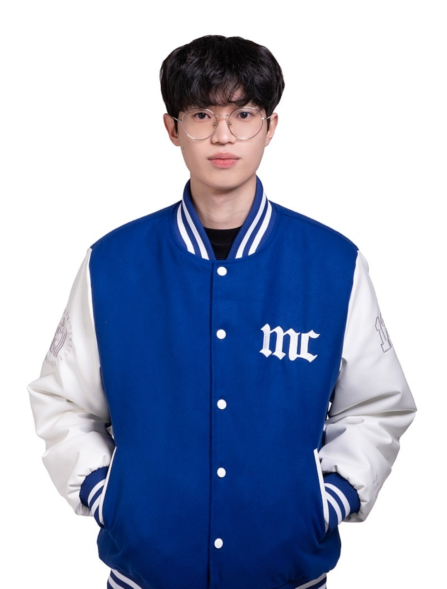

기술의 심장을 이해하는 크리에이터
하나의 영상이 완성되기까지, 모든 프레임과 픽셀에는 창작자의 철학과 기술의 역사가 담겨있습니다. 저는 미디어콘텐츠학과에서 영상 언어의 깊이를 배우며, 단순한 편집자를 넘어 기술의 근원을 탐구하는 크리에이터로 성장하고 있습니다. 화려한 영상미를 구현하는 소프트웨어의 힘은, 그것을 뒷받침하는 최적의 하드웨어 성능에서 비롯된다는 것을 잘 알고 있습니다.
보유 기술 (Skills)
-
Adobe After Effects (주력)
상상하는 모든 움직임을 현실로 만듭니다. 정교한 모션그래픽과 VFX를 통해 메시지에 생명력을 불어넣는 작업에 능숙합니다. - Adobe Premiere Pro, Photoshop, Illustrator
- Cinema 4D (C4D) 기초 모델링 및 렌더링
-
PC 하드웨어 지식 및 워크스테이션 최적화
최상의 결과물은 최적의 환경에서 나옵니다. 렌더링 속도를 단축하고 안정적인 작업을 위한 워크스테이션 구성 및 PC 조립, 최적화에 대한 깊은 이해를 갖추고 있습니다.
주요 경험 (Experience)
[프로젝트] 2024 한자 공모전, 부산 영상 공모전
기획부터 편집, 최종 모션그래픽까지 1인으로 제작하여 역동적인 한자 공모전 영상을 제작하여 입선이라는 결과를 얻음. 또한 부산 영상 공모전 또한 기획, 촬영, 편집을 1인으로 제작하여 출품함.
[개인 채널] 보이는 라디오
2025학년도 영상콘텐츠기획 수업을 통해 보이는 라디오로 PC 하드웨어 성능이 실제 영상 렌더링 및 편집 작업에 미치는 영향을 분석하고 리뷰하는 영상 콘텐츠를 직접 기획하고 제작하며, 기술과 크리에이티브의 접점을 탐구하여 크리에이터로서의 역량도 발휘함.
저의 목표
저는 창의성이 기술적 깊이를 만날 때 가장 강력한 시너지를 낸다고 믿습니다. 단순히 영상을 만드는 것을 넘어, 모든 콘텐츠 크리에이터들이 최상의 환경에서 창작에만 몰두할 수 있도록 돕는 PC 하드웨어 전문가로 성장하고 싶습니다. 기술의 심장을 이해하는 크리에이터, 그것이 제가 추구하는 모습입니다.